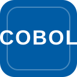
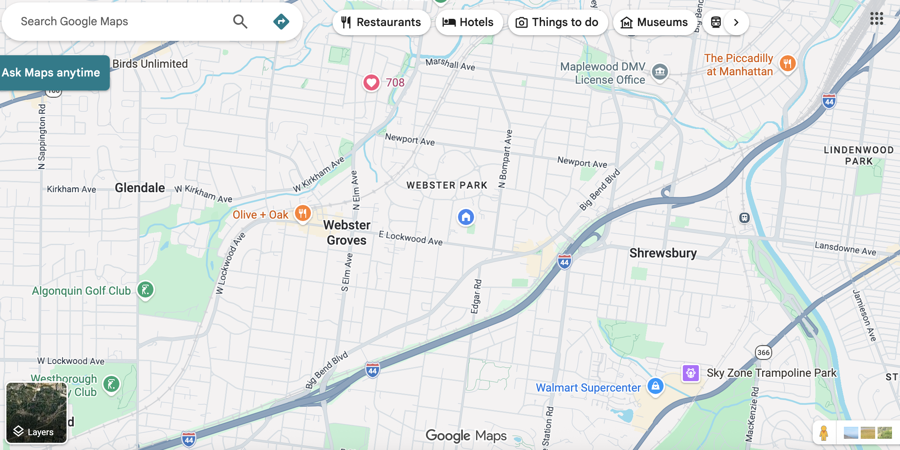

Introductory Letter
Have you ever wonder how programming languages evolved? Where they started out? How they got to where they are now? This question matters because the software people use every day did not appear all at once. It developed as new languages introduced new capabilities, improved speed, increased accessibility, reduced computing demands, and made new kinds of applications possible. To create this project, I researched major programming languages from different time periods, selected examples that showed their unique impact, and then combined explanations, reflections, visuals, and demonstrations to show how each language contributed to the growth of modern software.
Table of Contents
Genres
- FORTRAN
- LISP
- COBOL
- C
- Python
- JavaScript
- Rust
Closing Slides
- Conclusion
- Works Cited
FORTRAN
FORTRAN helped make scientific and mathematical programming more practical by letting programmers work with formulas instead of only low-level machine instructions.
Inventor: John Backus (IBM).
Program Focus: Science and engineering formulas for fast, reliable calculations.
Sample FORTRAN Code
Output
FORTRAN Visual Evidence

A real example of FORTRAN's impact is its use in scientific and engineering calculations on early IBM systems such as the IBM 704. FORTRAN made it easier to write formula-based programs for research, physics, and other technical fields, which is why it became so important in the early history of software.
FORTRAN Reflection
I chose FORTRAN because it represents probably the earliest big shift in programming history. It was one of the first programming languages and it showed that computers could be used for more than machine-level instruction. It let programmers write actual mathematical formulas for the computer in a much more readable way That mattered because it opened the door for modern scientific and technical software. Looking at FORTRAN helped me understand how the first major languages made programming more useful for real-world problem solving.
LISP
LISP shaped symbolic processing and artificial intelligence by representing operations as expressions built from lists.
Inventor: John McCarthy (MIT).
Program Focus: List processing: breaking information into meaningful pieces.
Sample LISP Code
Output
LISP Visual Evidence

A real example of LISP's influence can be seen in early artificial intelligence research, including programs such as SHRDLU that worked with symbolic language and reasoning. LISP became strongly associated with AI because its list-based structure made it useful for representing ideas instead of just numbers.
LISP Reflection
I included LISP because it shows a different path in the evolution of programming languages. While some languages focused on calculations or business tasks, LISP became important for symbolic thinking and artificial intelligence. LISP's design made it much easier to work with ideas, expressions, and most importantly lists of information. Studying LISP helped me see that programming languages did not all develop for the same reason; each one shaped modern software by solving a different kind of problem.

COBOL
COBOL helped bring computing into business by using a readable, English-like style for records, payroll, and reports.
Inventor: Grace Hopper and the CODASYL committee.
Program Focus: Business records, payroll, and readable report-oriented workflows.
Sample COBOL Code
Output
COBOL Visual Evidence

A real example of COBOL's importance is its long use in banking, payroll, and government record systems. COBOL was designed for large business-style reports and data processing, which is why it became closely connected to the everyday administrative work of major institutions.
COBOL Reflection
I chose COBOL because it showed how programming became a large part of the business world. COBOL once again made code even more readable and closer to everyday language. That shift helped organizations use computers for payroll, reports, and records. That was an important step in software development because it proved programming was not only for scientists or engineers. COBOL helped me understand how languages evolved to meet practical needs in workplaces and large systems people still depend on today.

C
C shaped systems programming by combining speed, portability, and low-level control.
Inventor: Dennis Ritchie (Bell Labs).
Program Focus: Very fast processing for sorting and handling large amounts of data.
Sample C Code
Output
C Visual Evidence

A real example of C's impact is UNIX, which became one of the most influential operating systems in computing history. Because C was fast and portable, it helped shape system software and influenced many later languages used in modern development.
C Reflection
I used C because it represents a major turning point toward fast and powerful system programming. C gave programmers more control over hardware while still being portable enough to influence many later languages. That balance of speed and flexibility helped shape operating systems and many other tools that modern software depends on. Thinking about C made it clear to me that language evolution is also about performance and control, not just readability.

Python
Python made software development more readable and productive, which helped it grow in education, automation, data science, and everyday programming.
Inventor: Guido van Rossum.
Program Focus: Readable scripting for quick automation and text/data summaries.
Sample Python Code
Output
Python Visual Evidence

A real example of Python's influence is its widespread use in automation and data analysis. Python became especially important in classrooms, scripting tasks, and data-focused work because its readable style made complex tasks easier for more people to learn and complete.
Python Reflection
I chose Python because it's another great example of how programming languages have changed over time. Python was the first coding language I learned and for good reason. Python was built on ideas from earlier languages, most importantly it made coding easier for more people to learn and use. Python is arguably one of the easiest languages to learn. That fact affected modern software development by making it more accessible for people. Python is one of the most widely used coding languages to this day.
JavaScript
JavaScript turned the web into an interactive software platform by powering dynamic changes directly inside the browser.
Inventor: Brendan Eich.
Program Focus: Live browser interactivity that updates instantly as users click.
Sample JavaScript Code
Output
JavaScript Visual Evidence

This Google Maps screenshot is a stronger example of JavaScript's impact on the frontend because it shows the kinds of features users actually interact with: searchable maps, clickable category buttons, live updates, zoom controls, and location tools. JavaScript helps power these dynamic website features, which is why it became such an important language in modern interactive web development.
JavaScript Reflection
JavaScript helped me show another stage in the development of programming languages. Earlier programming languages were often focused on making calculations, storing records, or tracking system processes, but JavaScript changed software development by making websites interactive in real time. That shift had a huge effect on modern software because it helped turn the internet from static web pages to dynamic interactive sites. JavaScript's influence is everywhere on the web, as it is arguable the #1 most used programming language in the world.

Rust
Rust helped modern software focus on both speed and safety, especially in systems programming and WebAssembly-based development.
Inventor: Graydon Hoare.
Program Focus: Safe-by-default performance that catches risky values early.
Sample Rust Code
Output
Rust Visual Evidence

A real example of Rust's importance is its use in memory-safe systems programming, especially in projects where developers want strong performance without the same level of risk for memory-related bugs. Rust is a modern response to long-standing problems in low-level software development.
Rust Reflection
I included Rust because it shows what modern programming languages are trying to improve today. Earlier languages made huge progress in speed, structure, and usability, but Rust focuses strongly on safety along with performance. That matters in modern software because developers now need programs that are fast but also less likely to fail because of memory errors or unsafe behavior. Rust helped me see that language evolution is still happening, and newer languages continue responding to the weaknesses of older ones.
Conclusion
Looking across these languages shows that software development changed step by step. Each language answered a different need, from scientific calculation and business records to system speed, readability, web interactivity, and safer modern performance. Together, they show how programming languages shaped the way developers build the software people use today.
Works Cited
“C and C++.” Funk & Wagnalls New World Encyclopedia, Jan. 2018, p. 1. EBSCOhost.
Computer History Museum. “Software & Languages.” Timeline of Computer History, Computer History Museum. Accessed 24 Mar. 2026.
Korb, Kevin B. “IBM Develops the FORTRAN Computer Language.” Salem Press Encyclopedia, Jan. 2023. EBSCOhost.
Mannikko, Nancy Farm. “Hopper Invents the Computer Language COBOL.” Salem Press Encyclopedia, Jan. 2023. EBSCOhost.
Mozilla. “JavaScript Technologies Overview.” MDN Web Docs. Accessed 24 Mar. 2026.
Python Software Foundation. Python 3 Documentation. Accessed 24 Mar. 2026.
Rust Project Developers. “Announcing Rust 1.0.” The Rust Blog, 15 May 2015.